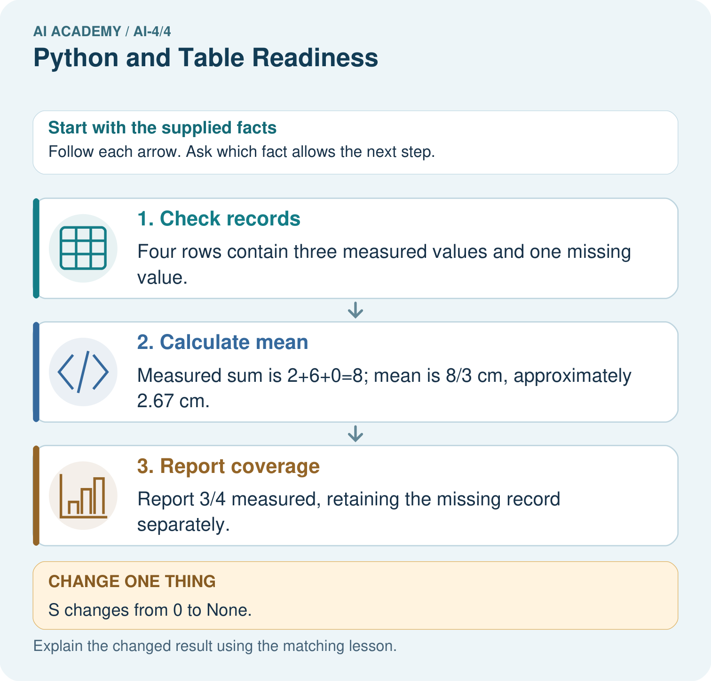

AI Academy · Level 4 · Grade 9 · Week 4 · Workbook
Python and Table Readiness
Learn to understand, design, build, test and explain AI systems responsibly.
Project: Responsible Plant Classifier
Workbook · 1 of 30
Recall and choose your starting point
Try the recall before opening notes. Then use a different colour or a labelled second line to correct your explanation.
Classification or Regression?
Without opening the old lesson, explain one key idea from Classification or Regression?. Give an example and a mistake that the idea helps you avoid.
The ML Lifecycle
Without opening the old lesson, explain one key idea from The ML Lifecycle. Give an example and a mistake that the idea helps you avoid.
Workbook · 2 of 30
Practise with fading help
Use W2: Classify records for Rows columns and schemas. Record the answer once; the lesson and workbook refer to the same attempt.
| Given inputs | Procedure I chose | Middle steps | Result and check |
|---|---|---|---|
Workbook · 3 of 30
Individual reasoning check
Use the worked case for Rows columns and schemas. Proposed explanation: “A successful run proves the conclusion”. Decide whether this explanation is supported. Point to the step or supplied fact that decides; explain your repair if needed.
Workbook · 4 of 30
Independent transfer case
Independent case: Changed independent case
Supplied values are3,7,14. Compute their mean. What should a function report for an empty list? How should it handle a missing fourth record?
Attempt this case before feedback. Record any help. Earlier examples below are further practice; a case already practised with feedback cannot establish fresh transfer.
Workbook · 5 of 30
Your learning target
Trace mean for [4,8,12] using sum(values)/len(values). What should the program do for []? Explain why returning 0 silently is misleading.
Workbook · 6 of 30
Solve the given case
Python lengths=[4,6,8]; total=sum(lengths); mean=total/len(lengths).
Trace and handle an empty list.
Show your trace, calculation or evidence
Workbook · 7 of 30
Check a changed case
Trace Python: lengths = [4, 7, 9]; selected = lengths[1]; total = selected + 3. Give selected and total.
My independent answer and reason
Week 4 Test and reflect
Workbook · 8 of 30
Design a revealing test
Create a changed input, boundary case or missing-information case. Write the expected answer or safe response before testing.
| Test record | My evidence |
|---|---|
| Changed input or condition | |
| Expected answer or fallback | |
| Observed result | |
| Why the result occurred |
Workbook · 9 of 30
Project checkpoint
Create a tiny five-row plant table with explicit column names, types, units, and a reproducible summary calculation.
The project change and evidence I will keep
Workbook · 10 of 30
Self check
I can explain the mechanism. I can show evidence. I can handle a changed case. I can name a limit. Mark each as not yet, with help or independently, and attach supporting work.
Teacher review ____________________ Next step ____________________
Workbook · 11 of 30
Transfer practice from the original programme
Trace mean for [4,8,12] using sum(values)/len(values). What should the program do for []? Explain why returning 0 silently is misleading.
Record support used: none, hint or teacher explanation.
Workbook · 12 of 30
W1 State a schema
List the required fields, types and duration boundaries for the worked table.
Workbook · 13 of 30
W2 Classify records
Classify minutes values 0, 60, -1 and 61 under this schema.
Workbook · 14 of 30
W3 Repair a unit problem
A source says 180 seconds but the row says minutes: 180. Give a documented correction.
Workbook · 15 of 30
W4 Design a schema independently
For a fictional shelf audit, define label and book_count fields. Require a nonempty text label and an integer count from 0 to 40. Give two valid and two invalid records with reasons.
Workbook · 16 of 30
W5 Separate validity and truth
A row says Reading, 12 and passes. Does that establish the session really lasted 12 minutes?
Workbook · 17 of 30
File input and output — W1 Trace types
Before and after int("8"), identify the types and values.
Workbook · 18 of 30
File input and output — W2 Predict the total
A sandbox file has lines 5, 0 and 2. What total does the worked reader print?
Workbook · 19 of 30
File input and output — W3 Repair a path issue
The file is in the class-data folder but the script looks in its working folder. Give a safe repair.
Workbook · 20 of 30
File input and output — W4 Read independently
In a fresh sandbox file counters.txt put 4, 6 and 0 on separate lines. Adapt the reader, print the number of values and total. State the expected results.
Workbook · 21 of 30
File input and output — W5 Handle malformed data
The file contains twelve on one line. Why should the program not silently turn it into zero?
Workbook · 22 of 30
Exceptions and recovery — W1 Trace success
What does parse_minutes("0") return, and why is zero allowed?
Workbook · 23 of 30
Exceptions and recovery — W2 Trace two failures
Compare parse_minutes("abc") and parse_minutes("70").
Workbook · 24 of 30
Exceptions and recovery — W3 Repair a handler
An except block returns 0 for any failure. State two problems and a repair.
Workbook · 25 of 30
Exceptions and recovery — W4 Build independently
Adapt the function for count strings representing integers 0 through 10. Test "4", "0", "11", "four" and "-1" and record status/value.
Workbook · 26 of 30
Exceptions and recovery — W5 Choose recovery
A batch has 8 valid and 2 invalid lines. What should its report include?
Workbook · 27 of 30
Feedback, return check and learning record
| Evidence | My record |
|---|---|
| Worked alone / hint / model | |
| First step I repaired and why | |
| New case checked later; date and result | |
| What I can now explain without notes | |
| One remaining question |
Revisit this idea with your teacher after a delay. Familiarity is different from explaining and using it on a changed case.
Workbook · 28 of 30
Pictorial case practice: Python and Table Readiness
Inspect a small table before asking Python to compute an average.
Plant heights in cm: P=2, Q=6, R=None, S=0. None means unmeasured; zero is a recorded valid height.
All inputs and outcomes in this worked example are invented classroom data; no real model run is claimed.

Why should the missing value not silently become zero? Point to the relevant step in the picture, then write the changed result and the rule or evidence that supports it.
Support used: alone / hint / worked example. This record is practice evidence.
Project connection: For your Responsible Plant Classifier, save the input, procedure, observed result and limitation of this check. Label this worked example as practice; use a different, previously unreviewed case when checking independent understanding.
Workbook · 29 of 30
Project portfolio milestone
Project: Responsible Plant Classifier
Current milestone: Frame the need. Name the user, the problem, allowed inputs and a safe simple starting method.
For your Responsible Plant Classifier, save the input, procedure, observed result and limitation of this check. Label this worked example as practice; use a different, previously unreviewed case when checking independent understanding.
| Evidence to keep | My record |
|---|---|
| This week’s input and deciding step | |
| Prediction and actual result (or labelled paper trace) | |
| One change since the previous checkpoint and why | |
| One error or limit and the next test |
Workbook · 30 of 30
Supported practice and learning evidence
Use this supported practice once, in the browser or on paper. Keep the reserved independent assessment for a separate first attempt before teacher feedback.
Inspect a small table before asking Python to compute an average.
Practice 1: explain the deciding evidence
Which labelled step matches this detail? Report 3/4 measured, retaining the missing record separately.
1. Check records
2. Report coverage
3. Calculate mean
Hint if needed: Read the steps in the pictorial case. Match the supplied detail to the stage that performs or records it.
After your attempt, compare with the supported explanation: Report coverage Report 3/4 measured, retaining the missing record separately. Read the picture in order. Report 3/4 measured, retaining the missing record separately. The arrows show which recorded input or intermediate result each decision uses. Explain the deciding step aloud before checking the changed case; pointing to the final answer alone does not show how it follows.
Practice 2: explain the deciding evidence
Changed-case practice: S changes from 0 to None. Which conclusion is supported by the supplied facts?
1. This one example guarantees correct results for every future input.
2. We can decide the result without examining the changed input or the procedure.
3. Mean becomes (2+6)/2=4 cm with 2/4 measured.
Hint if needed: Use the changed condition and the deciding step in the pictorial trace. The answer must say what follows from those facts.
After your attempt, compare with the supported explanation: Mean becomes (2+6)/2=4 cm with 2/4 measured. Removing a measured zero changes both the denominator and the coverage.
Repair a missing building block
Review Classification or Regression? (ai-4/3). Goal: Identify a task from the meaning of its target. Short practice: Did regression MAE improve when the boundary changed? Point to the relevant step in the picture, then write the changed result and the rule or evidence that supports it.. Return to this week and explain what you changed.
Review The ML Lifecycle (ai-4/1). Goal: Distinguish fitting a rule from applying a fixed rule. Short practice: Should the team silently retune on the changed test? Point to the relevant step in the picture, then write the changed result and the rule or evidence that supports it.. Return to this week and explain what you changed.
Predict, run and debug
The browser lab lets you edit the supported Python examples already included in this lesson. Predict first, run, inspect the actual output or error, change one input, then run again. Keep code, predictions, actual results and a reasoned revision together. On paper, label your result as a trace rather than an execution.
Keep your completed work
Use Download completed work in the hosted lesson to export your answers, reflections, practice feedback and code-run evidence. Open the HTML copy to read or print it. Drafts stay in this browser when storage is available; clear drafts on a shared device.